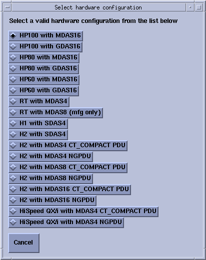

Operating Documentation
Direction 5193855-800, Rev# 4
LS 5.X RT Ltd. Access Service Information Adv
Operating Documentation |
This Appendix applies only to systems using the - "LFC Procedure - Version 05MW14.5" software load procedure.
This procedure explains how to correct the hardware configuration if the DAS Type, Tube Type, PDU Type, or Gantry Type information on Hardware screen is not correct.
On Hardware screen, click the [HARDWARE PARAMETERS SELECTION] button. This displays the hardware selection popup. Refer to Illustration 1.
Select the correct system configuration from the displayed list (this closes the hardware selection popup).
Illustration 1: Select Hardware Configuration Window
